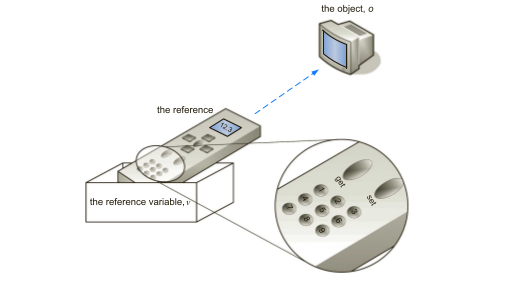

Java Virtual Machine
Ở bài học trước, ta đã điểm qua về các đặc tính cơ bản của Java. Trong bài học này ta sẽ đi sâu vào để xem Java hoạt động như thế nào.
Hoạt động ở đây bao gồm các bước:
Java hoạt động như thế nào
Cách mà Java tạo ra một object/ thực thể trong quá trình hoạt động.
JAVA VIRTUAL MACHINE (Re-read)
Hôm trước xem cái tài liệu của thằng quỷ kia gửi, nó sai tè lè. Sẵn có source của bài viết đó, nên thôi vô xem rồi phân tích lại.
JVM Architecture – Understanding JVM Internals
Every Java developer knows that bytecode will be executed by JRE (Java Runtime Environment). But many doesn’t know the fact that JRE is the implementation of Java Virtual Machine (JVM), which analyzes the bytecode, interprets the code and executes it. It is very important as a developer we should know the Architecture of JVM, this enables us to write code more efficiently. In this JVM architecture in Java with diagram article, we will learn more deeply about JVM architecture in Java and different components of a JVM.
What is a JVM in Java ?
A Virtual Machine is a Software implementation of a Physical Machine, Java was developed with the concept of WORA ( Write Once Run Anywhere ) which runs on a VM. The compiler will be compiling the java file into a java .class file. The .class file is input to JVM which Loads and executes the class file. Below goes the Architecture of JVM.

How JVM works in Java ?
Theo như những gì trên cái Architecture Diagram kia, thì JVM được chia thành 3 hệ thống chính. Bao gồm:
Class Loader Subsystem
Runtime Data Area
Execution Engine
Class Loader Subsystem
Java’s dynamic class loading functionality is handled by the class loader subsystem. It loads, links and initializes the class when it refers to a class for the first time at runtime, not at compile-time. It performs three major functionality such as Loading, Linking, and Initialization.
Loading
Class sẽ được load vào bởi component này. BootStrap ClassLoader, Extension ClassLoader, Application ClassLoader là 3 class loader giúp thực hiện chức năng này.
BootStrap ClassLoader Chịu trách nhiệm nạp các đường dẫn boostrap classpath, không có gì ngoài rt.jar. Đây là thằng được ưu tiên cao nhất.
Extension ClassLoader Chịu trách nhiệm load các class nằm trong thư mục ext (jre\lib) cụ thể thì là JAVA_HOME/jre/lib/ext
Application ClassLoader Chịu trách nhiệm load Application Level Classpath. Xem cái chú giải dưới kia nhé.
Những Class Loader kia tuân thủ thuật toán Delegation Hierarchy khi tải các lớp. Cái này đơn giản là từ thằng cha, chứa những thằng con nào thì cứ lôi vào load tiếp load tiếp nt đến khi load hết thì thôi. Search google trên mạng để hiểu thêm về thuật toán này.
Linking
Quá trình này gồm 3 bước như sau:
Verify – Trình kiểm tra bytecode (Bytecode verifier) sẽ xác minh xem mã code có phù hợp hay không. Nếu việc xác minh (kiểm tra - verify) không thành công thì nó sẽ thông báo lỗi verification error.
Prepare – Toàn bộ các bộ nhớ biến tĩnh (static variables memory) sẽ được cấp phát và gán các giá trị mặc định.
Resolve - Toàn bộ các tham chiếu bộ nhớ tượng trưng (symbolic memory references) được thay thế với giá trị tham chiếu ban đầu từ Method Area
Initialization
Đây là giai đoạn cuối cùng của Class Loading. Ở đây tất cả các biến tĩnh sẽ được gán với các giá trị ban đầu và static block sẽ được thực hiện.
Classpath
Classpath in Java refers to the path which will be used by the classloaders to load class in Java. If the classpath is not set correctly you are more likely to get ClassNotFoundException or NoClassDefFoundError exceptions. Classpath can be specified by using CLASSPATH variable in the Environment variable and using -cp or -classpath command line option.
Runtime Data Area
Runtime Data Area được chia thành 5 component chính, bao gồm:
Method Area – All the Class level data will be stored here including static variables. Method Area is one per JVM and it is a shared resource.
Heap Area – All the Objects and its corresponding instance variables and arrays will be stored here. Heap Area is also one per JVM since Method area and Heap area shares memory for multiple threads the data stored is not thread safe.
Stack Area – For every thread, a separate runtime stack will be created. For every method call, one entry will be made in the stack memory which is called as Stack Frame. All local variables will be created in the stack memory. Stack area is thread safe since it is not a shared resource. Stack Area is divided into three sub-entities such as:
Local Variable Array – Related to the method how many local variables are involved and the corresponding values will be stored here.
Operand stack – If any intermediate operation is required to perform, operand stack act as runtime workspace to perform the operation.
Frame data – All symbols corresponding to the method is stored here. In the case of any exception, the catch block information will be maintained in the frame data.
Local Variable Array – Liên quan đến phương thức, có bao nhiêu biến local tham gia và giá trị tương ứng sẽ được lưu ở đây.
Operand stack – Nếu có bất cứ hoạt động tính toán trung gian nào được yêu cầu thực hiện, thì Operand stack hành động như một runtime workspace để thực hiện các thao tác.
Frame data Tất cả kí hiệu tương ứng với từng phương thực được lưu trữ tại đây. Trong trường hợp có bất cứ lỗi nào xảy ra, thông tin của catch block sẽ được duy trì trong Frame data. Hiểu cách đơn giản thì có lẽ các method sẽ được đánh dấu bằng 1 symbols, và đây là nơi lưu nội dung của các function đó.
PC Registers – Each thread will have separate PC Registers, to hold address of current executing instruction once the instruction is executed the PC register will be updated with the next instruction
Native Method stacks – Native Method Stack holds native method information. For every thread, separate native method stack will be created.
Method Area – Toàn bộ data của Class sẽ được lưu trữ ở đây bao gồm các biến tĩnh. Method Area chỉ có 1 thằng duy nhất trong JVM và nó là một tài nguyên được chia sẻ. Nói nôm na thì nó như 1 cái kho chứa, thằng nào cần thì cứ vào lấy đồ ra xài, XHCN mà, thiếu gì hàng.
Heap Area – Toàn bộ các đối tượng và những biến thực thể của nó (instance variable) và array sẽ được lưu trữ ở đây. Heap Area cũng như thằng Method Area trên kia, chỉ có 1 trên đời, và nó cũng chia sẻ bộ nhớ cho nhiều thread khác. Vì vậy, Data được lưu trữ ở đây không phải là thread safe - tạm hiểu là không an toàn (vì có thể bị ảnh hưởng bởi các thread khác.
Stack Area – Đối với toàn bộ các thread, một separate runtime-stack (hiểm tạm là stack của riêng thread đó khi nó bắt đầu chạy, và chỉ chứa dữ liệu của riêng nó, chia ra riêng biệt với mấy thằng khác) sẽ được tạo ra. Đối với mỗi phương thức (method) được gọi, một entry sẽ được tạo ra trong Stack Memory - được gọi là Stack Frame. Tất cả các biến cục bộ sẽ được tạo ra trong Stack Memory. Stack Area là thread-safe, bởi nó ko chia sẻ tài nguyên với bất cứ thằng nào, đồng nghĩa với việc chỉ mình nó có thể thay đổi giá trị của nó, vì vậy mới đc gọi là thread-safe.
Stack Frame được chia thành 3 entry nhỏ bao gồm :
PC Registers – Mỗi thread sẽ có mộtPC Registers riêng biệt địa chỉ của lệnh hiện tại khi lệnh đã được thực thi. PC Registers sẽ tiếp tục cập nhật với lệnh tiếp theo. HIểu đơn giản thì khi mỗi thread được start, nó sẽ xếp các lệnh (method) của nó vào 1 stack. PC-Registers này lưu trữ thông tin của stack đó, cho biết là thread đang được thực hiện ở đâu, và tiến hành quản lý việc thực hiện. Nó giống như 1 thằng đứng ngoài giám sát. Để thằng CPU hỏi, đến lượt thằng nào thì nó chìa hồ sơ thằng đó vào.
Native Method stacks – thằng này giữ thông tin của các method bên trong thread của nó. Vì vậy, khi mà mỗi thread được tạo, thì Native Method stacks sẽ được khởi tạo.
Execution Engine
The bytecode which is assigned to the Runtime Data Area will be executed by the Execution Engine. The Execution Engine reads the byte code and executes one by one.
Các bytecode được gán cho Runtime Data Area sẽ được thực thi bởi Execution Engine. Execution Engine đọc những bytecode và thực thi từng cái một.
Interpreter – Reads the bytecode, interprets it and executes it one by one. The interpreter interprets the bytecode faster but executes slowly. The disadvantage of the interpreter is that when one method called multiple times, every time interpretation is required.
JIT Compiler – JIT Compiler neutralizes the disadvantage of the Interpreter ( a single method called multiple times, each time interpretation is required ), The Execution Engine will be using the help of Interpreter in converting but when it found repeated code it uses JIT compiler which compiles the entire bytecode and changes it to native code. This native code will be used directly for repeated method calls which improve the performance of the system.
JIT Compiler – JIT Compiler làm trung hòa (khắc phục) nhược điểm của Interpreter.
Execution Engine sẽ sử dụng sự giúp đõ của trình thông dịchInterpreter trong quá trình chuyển đổi, nhưng khi mà nó tìm thấy đoạn code bị lặp lại, nó sử dụng JIT Compiler với đoạn bytecode đã được phiên dịch và đổi nó thành mã nguồn gốc.
Mã nguồn gốc này sẽ được sử dụng trực tiếp cho các method lặp lại nhằm cải thiện hiệu năng của hệ thống.
Intermediate Code generator – produces intermediate code
Code Optimizer – Code Optimizer is responsible for optimizing the intermediate code generated above
Target Code Generator – Target Code Generator is responsible for Generating Machine Code/ Native Code
Profiler – Đây là một thành phần đặc biệt, nó có nhiệm vụ tìm kiếm các điểm nóng (hotspots). Nó được sử dụng để xác định rằng method có được gọi nhiều lần hay không.
Intermediate Code generator – Tạo mã trung gian
Code Optimizer - Có nhiệm vụ tối ưu đoạn mã trung gian được tạo ở trên
Target Code Generator – Nhiệm vụ của nó là generate ra Machine Code/ Native Code
Garbage Collector : Garbage Collector is a part of Execution Engine, it collects/removes the unreferenced objects. Garbage Collection can be triggered by calling “System.gc()”, but the execution is not guaranteed. Garbage collector of JVM collects only those objects that are created by new keyword. So if you have created any object without new, you can use finalize method to perform cleanup.
Interpreter đọc bytecode, thông dịch và thực thi nó từng cái một. Interpreter thông dịch nhanh hơn nhưng lại thực thiện chậm. Bất lợi của Interpreter đó là khi một method được gọi nhiều lần, thì mỗi lần như thế nó đều phải phiên dịch lại.
Garbage Collector : là một bộ phận của Execution Engine. Nó thu thập vaà xóa các object mà không được tham chiếu tới. Nó có thể được trigger (khởi động) bằng cách gọi “System.gc()”, nhưng việc thực hiện chức năng này ko được đảm bảo. Garbage Collector trong JVM chỉ collects những object mà được tạo bởi từ khóa new. Vì vậy, nếu mà bạn tạo bất cứ object nào mà ko sử dụng new, bạn có thể sử dụng phương pháp này để thực hiện dọn dẹp.
Nói cách khác, thằng này nó sẽ nhòm ngó các Object mà được tạo bởi từ khóa new, và thu thập cũng như xóa bỏ nó nếu như cảm thấy rằng nó ko còn đc tham chiếu tới.
Việc sử dụng function “System.gc()” này có thể clear nó được hoặc không, tùy xem nó có thằng nào còn tham chiếu tới nữa hay ko. Đôi khi nó xảy ra lỗi, nên phải cẩn thận.
Java Native Interface (JNI): JNI will be interacting with the Native Method Libraries and provides the Native Libraries required for the Execution Engine.
JNI - Java Native Interface - sẽ tương tác với Native Method Libraries và cung cấp Native Libraries cần thiết cho Execution Engine.
Biên dịch và thông dịch
Thông dịch (Interpretion): khi chạy chương trình, ngôn ngữ chương trình được dịch sang ngôn ngữ máy rồi sau đó mới thực thi.
Biên dịch (Compilation): lệnh của chương trình được thực thi, không cần dịch sang ngôn ngữ máy.
Class Loader trong Java
Tìm đc bài viết này hay, xem tham khảo
Java ClassLoader tiến hành nạp một tệp class của java vào máy ảo (JVM). Chỉ đơn giản là như vậy. Đây không phải là khái niệm lớn và phức tạp để hiểu được và mọi nhà phát triển java phải biết về Java Class Loader (bộ nạp lớp java) và cách thức hoạt động của nó.
Có một ngoại lệ (exception) phố biến không kém NullPointerException đó là ClassNotFoundException. Trong giai đoạn đầu làm việc với Java bạn có thể sẽ gặp vô số ClassNotFoundException. Java Class Loader là thủ phạm gây ra ngoại lệ này.
Các loại (phân cấp) Java Class Loader
Java Class Loader có thể được phân loại như sau:
Bootstrap Class Loader (Bộ nạp Lớp Khởi động)
Bootstrap Class Loader nạp các lớp java căn bản (core class) thuộc các gói như java.lang, java.util, v.v.. Những lớp này là một phần của môi trường thực thi của java (JRE). Bootstrap Class Loader được triển khai riêng cho từng nền tảng nên có thể khác nhau giữa các JVM.
Extensions Class Loader (Bộ nạp Lớp Mở rộng)
Thư mục JAVA_HOME/jre/lib/ext chứa các gói jar, đây là những lớp java mở rộng cho các lớp java cơ bản. “Extensions class loader” nạp các lớp java từ thư mục “ext” này. Bạn có thể sử dụng thuộc tính môi trường hệ thống java.ext.dirs để bổ sung thêm các thư mục “ext” và các tệp jar cho Extensions Class Loader nạp vào JVM.
System Class Loader (Bộ nạp Lớp Hệ thống)
Các lớp java có sẵn trong classpath của java được nạp bởi “System class loader” Bạn có thể thấy nhiều loại Class Loader khác như java.net.URLClassLoader, java.security.SecureClassLoader, v.v.. Chúng là những bộ nạp mở rộng từ java.lang.ClassLoader.
Các Class Loader có mối quan hệ phân cấp với nhau. Class Loader có thể nạp các lớp từ một cấp độ nào đó trên hệ thống phân cấp của chúng. Mức thứ nhất là Bootstrap Class Loader, mức thứ hai là Extensions Class Loader và mức thứ ba là System Class Loader.
Lớp tự tham chiếu
Khi trình biên dịch tiến hành biên dịch một tệp mã nguồn java sang định dạng binary class, nó chèn một thuộc tính vào trong tệp tin class này. Đây là một trường “public final” được đặt tên là “class” với kiểu dữ liệu java.lang.Class
Do đó với tất cả các lớp java bạn đều có thể truy xuất thuộc tính này như sau: java.lang.Class classObj = ClassName.class;
Sự quan trọng của đối tượng Class đó là nó có phương thức getClassLoader() để trả về một “class loader” cho một lớp. Phương thức này sẽ trả về null nếu nó đã được nạp bởi “bootstrap class loader”.
Java Class Loader làm việc như thế nào?
Khi một tên lớp được gửi tới, trước hết “class loader” sẽ xác định xem lớp đó ở đâu và sau đó đọc tệp class có tên gọi đó từ hệ thống tệp bản địa. Do đó, quá trình nạp này phụ thuộc vào nền tảng (platform).
Mặc định java.lang.ClassLoader đã được đăng ký như là một class loader có khả năng nạp song song các lớp. Nhưng các lớp con cần phải được đăng ký là song song hoặc không tại thời điểm khởi tạo.
Các lớp cũng có thể được nạp từ mạng, được tạo ra trong thời gian chạy và nạp. Lớp ClassLoader có một phương thức tên là defineClass với đầu vào là mảng byte và nạp vào một lớp.
Cha của Class Loader
Tất cả các “class loader” ngoại trừ “bootstrap class loader” đều có một “class loader” cha. Lớp cha này không giống như trong quan hệ cha-con của kế thừa. Mọi thể hiện của “class loader” được kết hợp với một “class loader” cha.
Khi một “class loader” được giao phó trách nhiệm nạp một lớp, bước đầu tiên nó trao công việc này cho một “class loader” cha đã được kết hợp cho nó. Sau đó, “class loader” cha nhận được hướng dẫn và tiếp tục trao lời gọi tới “class loader” cha của nó. Trong dãy phân cấp này, Bootstrap Class Loader có vị trí cao nhất.
Khi một thể hiện của “class loader” được tạo ra, nó sử dụng hàm dựng để “class loader” cha có thể kết hợp với nó.
Class Loader: Quy tắc 1
Một lớp được nạp chỉ một lần vào JVM.
Trong quy tắc này, “một lớp” là gì? Tính duy nhất của một lớp được xác định cùng với đối tượng ClassLoader mà đã nạp nó vào JVM. Một lớp luôn được xác định sử dụng tên đầy đủ của nó (package.classname). Vì vậy, bạn sẽ có một entry (tên gói, tên lớp, class loader) khi một lớp được nạp vào JVM. Do đó, cùng một lớp có thể được nạp hai lần bởi hai đối tượng ClassLoader khác nhau.
Java Xử Lý Việc Khởi Tạo, Lưu Trữ và Thay Đổi Dữ Liệu Của Object Như Thế Nào
Tất cả các developer biết về ngôn ngữ Java đều hiểu cách để khởi tạo một object từ một class, công việc này
rất đơn giản nhờ sử dụng từ khóa new:
new MyNumber()Tùy vào method signature của class được sử dụng để tạo object chúng ta sẽ cần truyền vào một
số lượng đối số (argument) nhất định. Ví dụ với class MyNumber được định nghĩa như sau:
public MyNumber {
public int counter;
public MyNumber(init initialValue) {
counter = initialValue;
}
}Thì chúng ta có thể khởi tạo object từ class này với đối số truyền vào như sau:
MyNumber myNumber = new MyNumber(100);Tuy nhiên bạn có biết điều gì thực sự diễn ra khi chạy đoạn code trên?
3 Sự Kiện Diễn Ra Khi Khởi Tạo Object
Có 3 sự kiện diễn ra khi chúng ta tạo một object từ class:
Java (cụ thể là Java Virtual Machine) sẽ lấy ra một địa chỉ bộ nhớ còn trống trong memory để lưu trữ dữ liệu của object. Các biến trong đối tượng mới tạo ra này (gọi là instance variable hay field) được gán cho các giá trị mặc định nếu như chúng được khai báo mà chưa được gán giá trị.
Tiếp theo Java sẽ gọi phương thức dựng (gọi là constructor method) với các đối số được sử dụng khi khởi tạo object. Ngoài ra các bước
Cuối cùng Java sẽ trả về địa chỉ bộ nhớ trên RAM. Nếu như một biến được gán giá trị từ việc khởi tạo object thì Java sẽ gán giá trị của bộ nhớ này cho giá trị của biến đó.
OK tuy nhiên sẽ được lợi gì nếu như tôi hiểu về quy trình tạo object trên? Để trả lời câu hỏi trên chúng ta sẽ tham khảo một ví dụ sau:
MyNumber myNumber = new MyNumber(100);
MyNumber newNumber = myNumber;
newNumber.counter = 101;
Lúc này bạn đoán giá trị của myNewNumber.counter sẽ là bao nhiêu:
System.out.println(myNumber.counter);Câu trả lời là 101 thay vì 100. Tại sao vậy?
Object Referrence
Nhớ lại 3 sự kiện diễn ra khi khởi tạo object đề cập trong phần trước bạn sẽ thấy lúc này giá trị của
biến myNumber chính là giá trị của địa chỉ bộ nhớ của object khởi tạo. Do đó khi chúng ta
gán
giá trị của biến newNumber bằng với biến myNumber như sau:
MyNumber newNumber = myNumber;Thì lúc này Java sẽ trỏ giá trị của biến newNumber về địa chỉ bộ nhớ RAM nơi lưu trữ dữ liệu
của object. Hay nói cách khác myNumber và newNumber tham chiếu tới một địa chỉ
duy nhất trên bộ nhớ.
Do đó khi bạn thay đổi giá trị của biến counter của object newNumber trong dòng code:
newNumber.counter = 101;Thì lúc này dữ liệu thực tế bị thay đổi là dữ liệu nằm ở địa chỉ bộ nhớ lưu trữ dữ liệu của object (được
sử dụng bởi cả myNumber và newNumber).
Tính năng trên trong Java được gọi là tham chiếu tới đối tượng hay object refference. Ở
đây chúng ta nói biến newNumber giữ vai trò là một pointer tham chiếu tới địa chỉ trên RAM
lưu trữ dữ liệu của object được khởi tạo trước đó (và gán cho giá trị của biến myNumber).

Bạn có thể tưởng tượng object giống như một màn hình hiển thị nội dung của một chương trình từ một kênh
nào đó như HTV1. Các biến myNumber và newNumber giống như các remote điều
khiển.
Bạn có thể sử dụng một trong hai remote điều khiển này để chuyển kênh và khi điều đó diễn ra thì màn hình sẽ chuyển sang kênh được thay đổi bởi một trong hai remote.
Derfeference
Điều gì diễn ra khi thay đổi giá trị của newNumber về một số integer, string hoặc
object khác... ví dụ như sau:
int newNumber = 2017;Liệu lúc này myNumber sẽ nhận giá trị là 2017 hay không?
Câu trả lời là không. Điều này là bởi vì khi bạn gán giá trị khác cho newNumber thì Java sẽ
trỏ giá trị của biến này về một địa chỉ khác trên RAM trên đó lưu trữ dữ liệu mới của nó. Do đó biến
myNumber không bị ảnh hưởng. Tính năng này còn được gọi là object
derefference.
Giống như ví dụ ở trên điều gì xảy ra nếu như bạn làm rơi một chiếc remote và nó bị hư? Chiếc remote thứ hai vẫn không bị ảnh hưởng và nó vẫn có thể chuyển kênh.
Nói cách khác nếu bạn thay đổi giá trị của object tại địa chỉ ban đầu thì sự thay đổi này sẽ ảnh hưởng
tới tất cả các biến trỏ tới object này (ở ví dụ của chúng ta là hai biến newNumber và
myNumber).